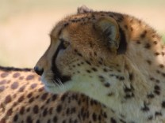

Document
The cheetah is the world's fastest land mammal.
With acceleration that would leave most automobiles in the dust,
a cheetah can go from 0 to 60 miles an hour in only three seconds.
These big cats are quite nimble at a high speed and can make
quick and sudden turns in pursuit of prey.
- One way to always recognise a cheetah is by the long, black lines
which run from the inside of each eye to the mouth. These are usually
called “tear lines” and scientists believe they help protect the
cheetah’s eyes from the harsh sun and help them to see long distances.
- Cheetahs are the only big cat that cannot roar. They can purr though
and usually purr most loudly when they are grooming or sitting near other cheetahs.
- While lions and leopards usually do their hunting at night, cheetahs hunt for
food during the day.